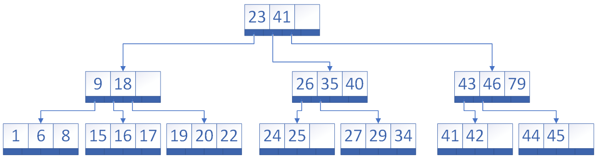
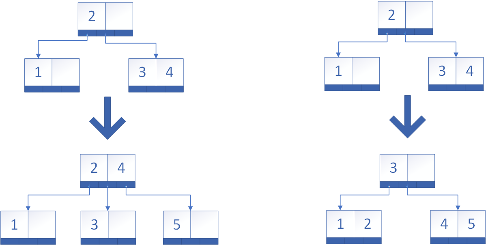
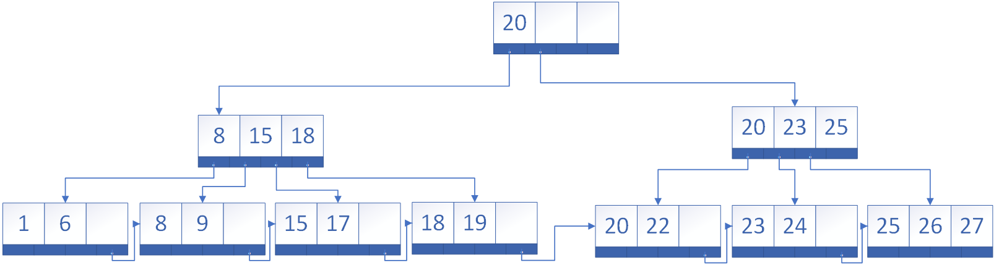
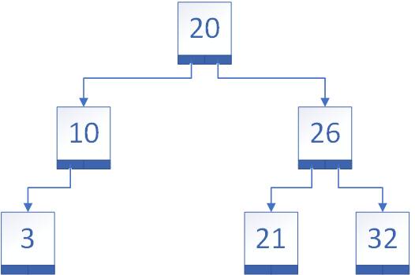
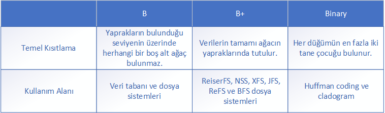

B, B+, B#, Binary Tree Nedir? Aralarındaki farklar nelerdir?
By Nur Sultan Bolel posted January 26,2019
Selamlar😊 Bu yazımda bilgisayar bilimlerinde oldukça önemli bir yeri olan, sıkça kullanılan ve karıştırılan B, B+, B# ve Binary (ikili) ağaçlardan(tree) ve aralarındaki farklardan bahsedeceğim. Bu yazıdaki amacım sizlere ağaç veri yapısını anlatmak değil çok fazla varyasyonu olan ağaçların özelliklerinden bahsederek aralarındaki farkları açıklamak.
B Ağacının(B tree) Özellikleri:
Ağaçtaki her düğümde(node)(kök ve yaprak dışındaki düğümler) en fazla M-1 tane anahtar(key) bulunur.
Ağaçtaki her düğümün(kök ve yaprak dışındaki düğümler) en fazla M, en az M/2 tane çocuğu bulunur.
Düğümlerdeki anahtarların belirli bir düzeni vardır. Bir anahtarın sol tarafında bulunan alt ağaçtaki anahtarlar bu anahtarın öncülleridir(predecessor). Sağ tarafında bulunan alt ağaçtaki anahtarlar ise bu anahtarın ardışıklarıdır(successor). Bir düğümdeki anahtar, sol alt ağaçtaki tüm anahtarlardan büyüktür ve sağ alt ağaçtaki tüm anahtarlardan küçüktür.
Ağacın derinliği mümkün olduğunca küçük tutulur.
Ağacın yapraklarının bulunduğu seviyenin üzerinde herhangi bir boş alt ağaç bulunmaz.
Ağaçtaki tüm yapraklar aynı seviyede(level) bulunur.

Yukarıdaki şekilde her bir düğümün ilk satırı anahtarları ikinci satır ise o düğümün çocuklarını(child) gösteren işaretçileri(pointer) temsil ediyor.
Şekil1’deki örnek üzerinden B ağacını inceleyecek olursak her düğümün en fazla M=4 en az M/2=4/2=2 tane çocuğu bulunuyor.
B ağaçlarına veri ekleme işleminde, verinin ekleneceği düğüm dolu ise düğüm ikiye bölünerek düğüm sayısı artırılır. Bölünme sonucunda düğümlerin doluluk oranı %50’dir ve veri ağaca eklenir. Fakat B# ağacında bölünme işlemini geciktirilerek düğümün doluluk oranı artar. Aşağıdaki görselde B ve B# ağaçları için ekleme işlemleri yapılmıştır.

Sol taraftaki örnekte bir B ağacına ekleme işlemi yapılmıştır. 5 sayısı 2 sayısından büyüktür ve 3 ve 4’ün bulunduğu düğümler ise doludur. Bu duruma göre düğüm bölünür ve okun gösterdiği şekilde ağaç biçimlenir.
Sağ taraftaki örnekte bir B# ağacına ekleme işlemi yapılmıştır. 5 sayısı 2 sayısından büyüktür ve 3 ve 4’ün bulunduğu düğümler ise doludur. Bu duruma göre düğüm bölünmesi geciktirilir ve okun gösterdiği şekilde ağaç biçimlenir.
B+ Ağacının(B+ tree) Özellikleri:
Ağaçtaki her düğümde(kök ve yaprak dışındaki düğümler) en fazla M-1 tane anahtar bulunur.
Ağaçtaki her düğümün(kök ve yaprak dışındaki düğümler) en fazla M tane çocuğu bulunur.
Düğümlerdeki anahtarların belirli bir düzeni vardır. Bir anahtarın sol tarafında bulunan alt ağaçtaki anahtarlar bu anahtarın öncülleridir. Sağ tarafında bulunan alt ağaçtaki anahtarlar ise bu anahtarın ardışıklarıdır. Bir düğümdeki anahtar, sol alt ağaçtaki tüm anahtarlardan büyüktür ve sağ alt ağaçtaki tüm anahtarlardan küçüktür.
Verilerin tamamı ağacın yapraklarında tutulur. Yaprakların dışındaki düğümlerde yalnızca anahtarlar tutulur.
Ağaçtaki yapraklar tek yönlü bağlı liste şeklinde birbirlerine bağlıdır.

İkili Ağacın(Binary tree) Özellikleri:
Her düğümün sağında ve solunda olmak üzere en fazla iki tane çocuğu bulunur(1 tane veya hiç çocuğu da olmayabilir).
İkili ağacın çeşitli varyasyonları bulunmaktadır.
İkili ağacın binary search tree, AVL tree, strictly binary tree, complete binary tree ve extended binary tree, vs. gibi bazı varyasyonları vardır(Aşağıda en sık karşılaşılan iki tanesini kısaca açıkladım).
İkili Arama Ağacı(binary search tree): Düğümdeki değer, sol alt ağaçtaki tüm anahtarlardan büyüktür ve sağ alt ağaçtaki tüm anahtarlardan küçüktür.
AVL Ağacı(Adelson Velskii and Landis tree): Her bir düğümün sağ ve sol alt ağaçları aynı boyda olmalıdır. Denge faktörünün -1,0 ve 1 değerlerini alabilir. (denge faktörü = sağ alt ağacın boyu– sol alt ağacın boyu)

Sonuç: Karşılaştırma Tablosu
